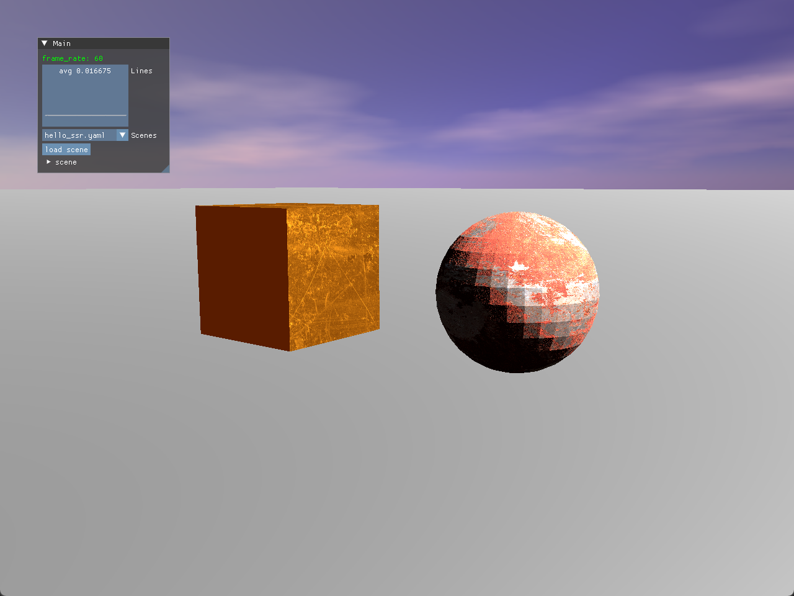
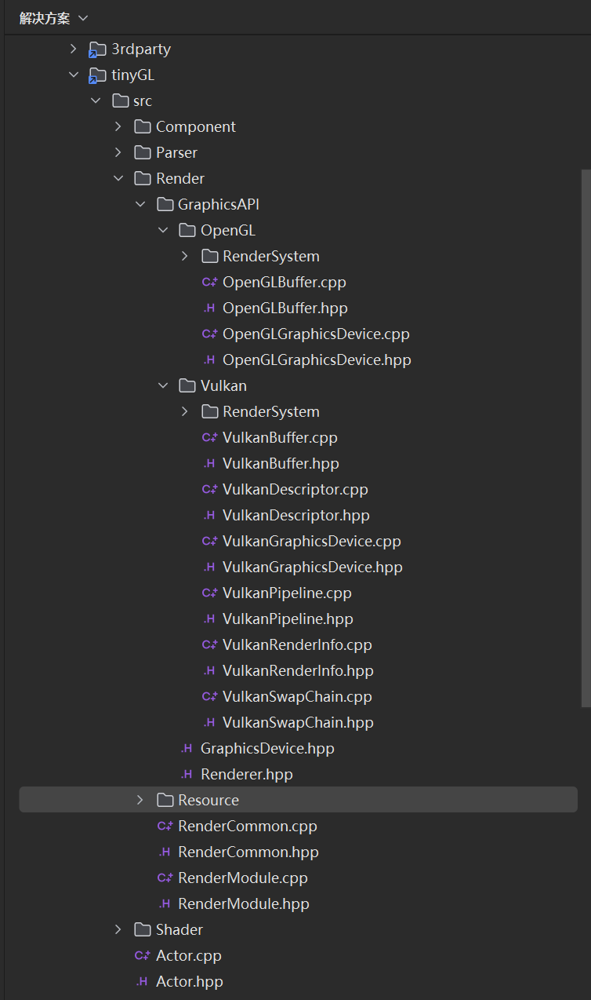

Vulkan接入小总结
前言

这是一张平平无奇的渲染图，没有阴影，没有IBL，也没有反射等各种酷炫高大上的效果。
但这张平平无奇的渲染图是我断断续续花了一个月的时间才完成的结果：这是KongEngine接入Vulkan后得到的最新效果。在前面的几篇文章我也提到过，我最近一直在处理这个事，为此我将KongEngine的渲染代码重构，并将Vulkan整合进来。当然原有的OpenGL能力我还是保留着，目前的目标是先利用Vulkan还原原有的OpenGL效果。
这篇文章也不是什么Vulkan入门教程，不会系统的讲Vulkan的初始化流程是怎么样的，Render Pass和Pipeline是什么，DescriptorSet要怎么设定等等。这些内容太复杂了，很难在一篇文章内讲清楚，况且我现在也不能说是很精通。这篇文章只是会大概介绍一下KongEngine目前的Vulkan结构。
KongEngine的Vulkan结构
如下图所示:

KongEngine目前将图形API的部分整合了起来，封装成了OpenGL部分和Vulkan的部分。目前这两个部分的流程还是有一定的区别，本来按照原有计划是将OpenGL的渲染流程按照Vulkan的流程来实现的，但是发现这样做难度不小，改动很大。放到后面再慢慢整合吧。
为了资源管理的统一，我将Buffer、Texture等通用的概念封装成了基础类，OpenGL和Vulkan会分别实现对应的子类来实现具体的流程。
1 | |
比如说像上面的代码是OpenGL和Vulkan的buffer类的基类，两个图形API会分别继承这个基类实现各自的buffer类：OpenGLBuffer和VulkanBuffer。这样可以在大体流程不变的情况下针对OpenGL和Vulkan分别做一些特化实现。
1 | |
上方就是对一个quad形状初始化的代码，OpenGL和Vulkan会使用同样的原始数据，不过由于OpenGLBuffer使用了VAO，所以这里会初始化Attribute布局，而Vulkan这部分逻辑是放在pipeline的，所以这里会有个小差异。
同样这么处理的还有Texture、RenderInfo等类型。
Vulkan的渲染系统
Vulkan目前有三个渲染系统，分别是：SimpleVulkanRenderSystem、VulkanPostProcessSystem和VulkanSkyBoxRenderSystem。这三个渲染系统分别对应着PBR、后处理和天空盒。每个Vulkan的渲染系统有着独立的pipeline、renderpass和descriptor set，在创建系统的时候，会按照不同渲染系统的需求来初始化。下面的例子是SimpleVulkanRenderSystem的创建流程。
1 | |
渲染的时候，每个渲染系统会各自绑定自己的renderpass和pipeline，以及对应的descriptor set输入。目前SimpleVulkanRenderSystem还会使用push constant将modelMatrix传到GPU中（后续这里可能会有修改）。
1 | |
那么整体的更新流程就如下面所示。
1 | |
当然，这里面有很多东西可以讲的，比如说怎么创建对应的Pipeline和renderpass，怎么创建DescriptorSet等等，这些很细节的内容这里就不做介绍了，我会找时间整理一下，看看有没有机会系统的写一篇文章（埋个坑）。
接入ImGui
为了方便，我在处理完几个渲染系统后还将ImGui接入了进来。
接入ImGui其实比我想象中要简单不少，ImGui的官网其实提供了Vulkan接入ImGui的例子，但是一开始看得我云里雾里的。
后面在AI的帮助下，发现和OpenGL的流程其实大差不差。比OpenGL更加复杂的部分就是需要在初始化ImGui的时候传入Vulkan的实例信息。这里我还为ImGui单独创建了一个CommandPool，不太确定是不是必须的，还是可以和模型那边共用。
1 | |
代码如上面所示。目前最终的渲染代码放在VulkanPostprocessSystem的Draw函数中，EndRenderPass前了，因为后处理使用的是swapchain的render pass。这是临时的处理，后面会放到另外合适的地方。
结语
好了，不知不觉中已经贴了这么多代码了。今天的这篇文章可能略显无聊，并且都是大段的介绍性文字和代码，读起来可能并不怎么有趣。
确实，这篇文章只是我对学习Vulkan，并将它的能力接入到KongEngine的第一阶段的成果，并不有趣也并没有什么了不起的，但也是一个里程碑，可以记录一下。
现在我慢慢将OpenGL的一些能力接入到Vulkan里面，目前正在做的是延迟渲染的流程。在处理延迟渲染这个流程的时候，我会使用单个Render Pass多Subpass的方法，这是Vulkan相较于OpenGL的一个很重要的区别。
在同一个render pass的多段subpass可以共享附件，不需要等待前一个渲染命令将结果存到内存中，也缓解了GPU的带宽压力；同时subpass的出现可以减少状态切换的开销，也支持并行处理。还有其他很多好处，这里就不一一列举了。
参考资料
除了官方的资料外，我这次接入Vulkan很大程度上是依照了这个视频系列Vulkan(C++) Game Engine Tutorials。作者深入浅出的将如何实现一个Vulkan渲染引擎的步骤讲解的非常明白，并且将很多图形学上的原理也讲解的十分生动，这里强烈推荐。